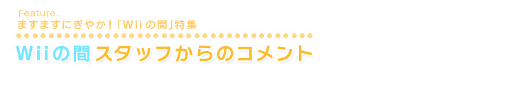
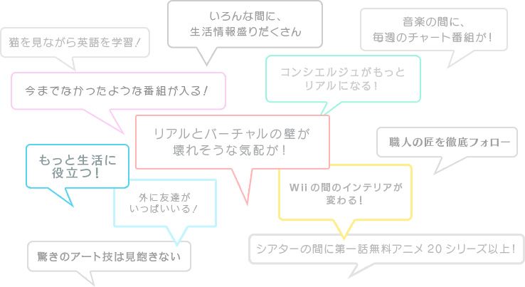
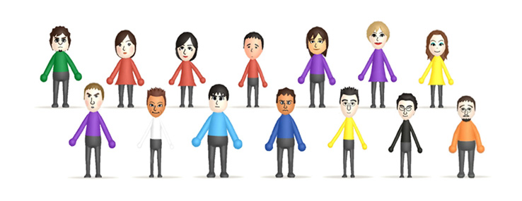
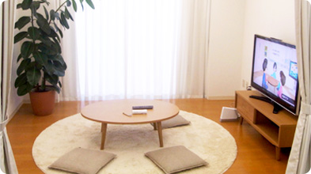
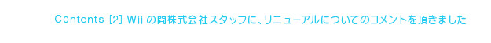

『Wiiの間』スタッフのみなさんのMiiから、『Wiiの間』のみどころについてメッセージをいただきました！今年の秋に予定している大きなリニューアルについても、少しだけヒントが隠されています。


バーチャルとリアルの垣根を取り払うというのが、『Wiiの間』の一つの大きなミッションです。みなさんのリアルのお茶の間に変化をもたらしたいという想いをこめて、オフィスに「リアル『Wiiの間』」まで作りました！

お茶の間がちょっと豊かになるような、コンテンツやサービスを気軽に体験できる。そして、いろんな人からおすすめを教えてもらったり、自分も家族や友だちにおすすめできる。それが『Wiiの間』の最大の特徴です。今度のリニューアルでは、そこをさらに強く打ち出していきたいと思っています。
![Contents[1]新しくなった「間」やおすすめコンテンツをご紹介](../common-img/f_bg01.jpg "Contents[1]新しくなった「間」やおすすめコンテンツをご紹介")
